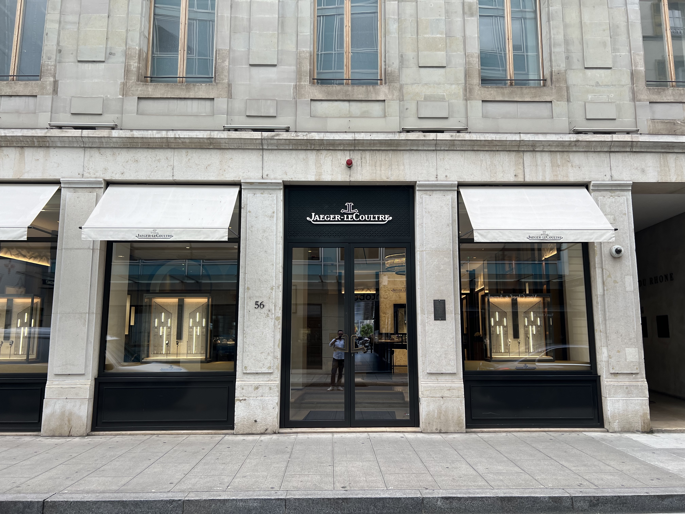
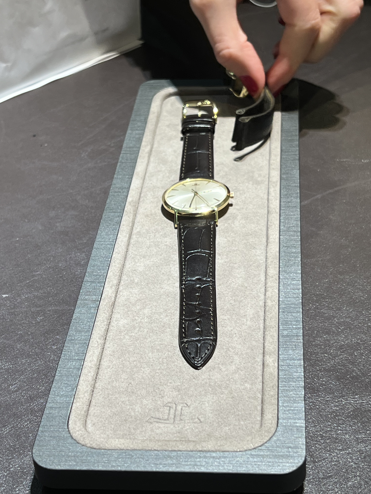
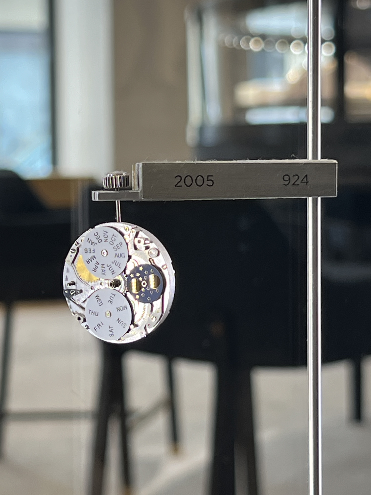

Rive · Geneva · Switzerland
Jaeger-LeCoultre
The watchmaker's watchmaker.
Something I didn't know, as someone who isn't really a watch guy: you can't walk into the Rolex store in Geneva and buy a Rolex. Not that I could afford one, but still — you're standing in Geneva, cash in hand, and they'll put you on a waitlist. Same for Patek Philippe and most of the elite brands. They manufacture scarcity deliberately, driving up perceived importance through relationships and queues. It's a whole game. It feels like that scene in The 40-Year-Old Virgin where Jonah Hill is standing in the store asking if he can just give them money and take the boots. But no. Online only. Sir.
There are a few places in Geneva where you can walk in, buy an excellent Swiss watch, and leave wearing it. Jaeger-LeCoultre — just call it JLC, I can't pronounce it either — is one of them. They're known in the industry as the watchmaker's watchmaker: a brand that serious watch people respect deeply, one that supplies movements to many of the other great 'maisons'. Less famous than Rolex. More respected by the people who know.
"Walk in, buy the watch, leave with it on your wrist. In Geneva that's rarer than you'd think."
On a personal note, and for context on the beautiful gold watch in these photos — my dad received a JLC for his bar mitzvah, many years ago. It had seen better days. My mom and I brought it to the flagship on Rue du Rhône — they sat us down, gave us very cold, very crisp water, walked us through the watch's history, and once I agreed to pay the service fees, sent it to their atelier in the Vallée de Joux in the Jura. Six months later I came back, had more excellent water, and walked out with a genuinely beautiful watch on my wrist.
This watch had somehow made it from a workshop in the Jura to Scarsdale when my dad turned thirteen, and now back to the valley for a touch-up, and onto my wrist. That journey alone felt worth something.
The store is full of the most beautiful watches you'll ever see. If you're in Geneva and want to buy a serious Swiss watch — and actually leave with it — this is the place to go.



Write a few lines. Add some photos. We turn it into a proper travel article. Next time someone asks you for a recommendation, you'll have a link.